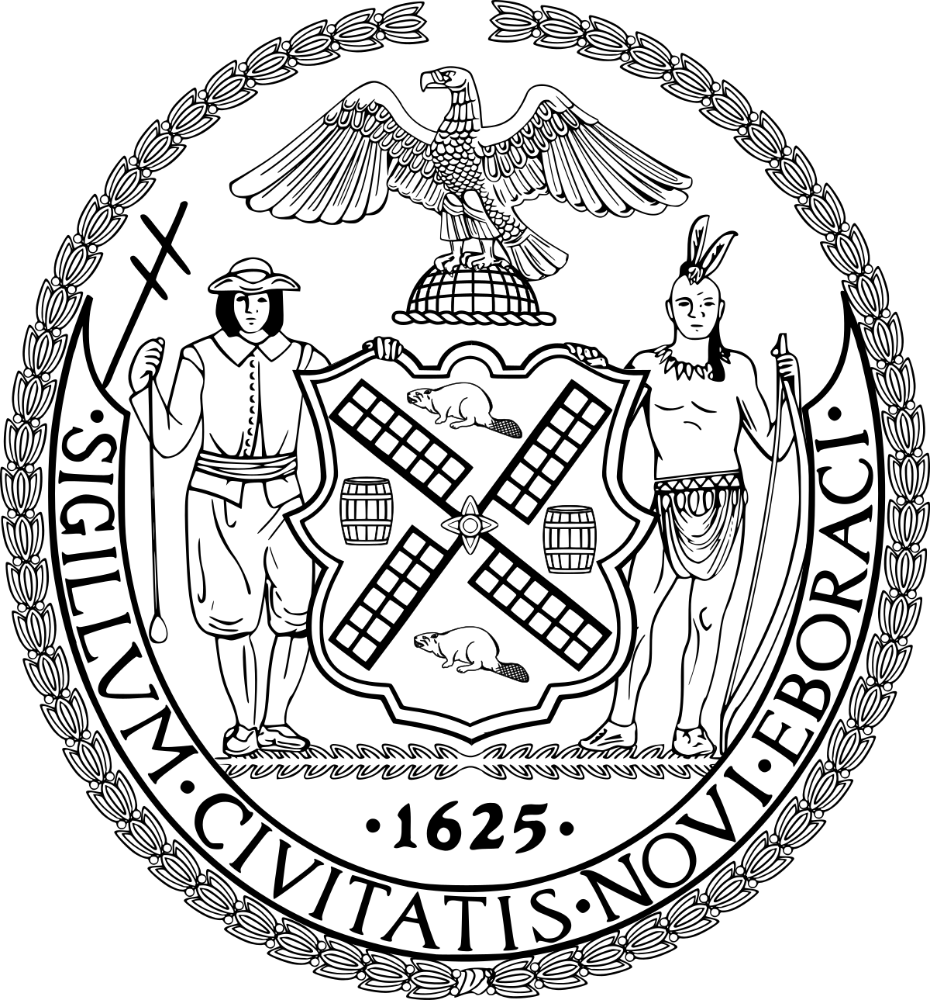
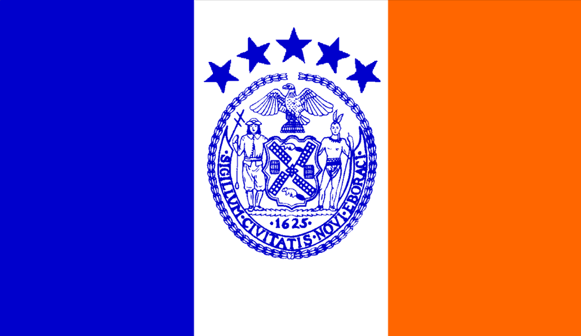
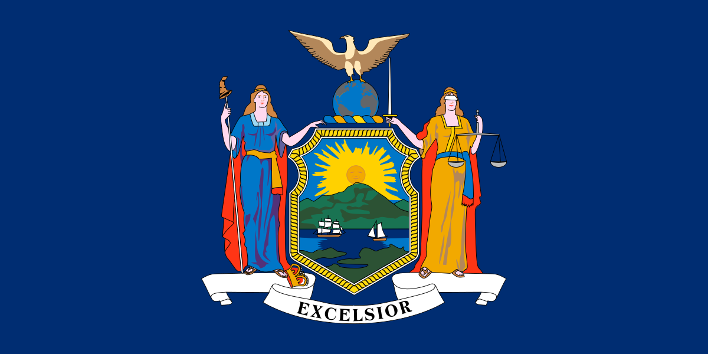

New YORK History
The City of New York, usually referred to as either New York City (NYC) or simply New York (NY), is the most populous city in the United States. With an estimated 2018 population of 8,398,748 distributed over a land area of about 302.6 square miles (784 km2), New York is also the most densely populated major city in the United States. Located at the southern tip of the state of New York, the city is the center of the New York metropolitan area, the largest metropolitan area in the world by urban landmass and one of the world's most populous megacities, with an estimated 19,979,477 people in its 2018 Metropolitan Statistical Area and 22,679,948 residents in its Combined Statistical Area. A global power city, New York City has been described as the cultural, financial, and media capital of the world, and exerts a significant impact upon commerce, entertainment, research, technology, education, politics, tourism, art, fashion, and sports. The city's fast pace has inspired the term New York minute. Home to the headquarters of the United Nations, New York is an important center for internationalSituated on one of the world's largest natural harbors, New York City consists of five boroughs, each of which is a separate county of the State of New York.
The Great Seal Of NYC

The five boroughs – Brooklyn, Queens, Manhattan, The Bronx, and Staten Island – were consolidated into a single city in 1898.The city and its metropolitan area constitute the premier gateway for legal immigration to the United States. As many as 800 languages are spoken in New York, making it the most linguistically diverse city in the world. New York City is home to more than 3.2 million residents born outside the United States, the largest foreign-born population of any city in the world. As of 2019, the New York metropolitan area is estimated to produce a gross metropolitan product (GMP) of US$1.9 trillion.[8] If greater New York City were a sovereign state, it would have the 12th highest GDP in the world. New York is home to the highest number of billionaires of any city in the world.
The flag of NYC

New York City traces its origins to a trading post founded by colonists from the Dutch Republic in 1624 on Lower Manhattan; the post was named New Amsterdam in 1626. The city and its surroundings came under English control in 1664 and were renamed New York after King Charles II of England granted the lands to his brother, the Duke of York. New York was the capital of the United States from 1785 until 1790, and has been the largest US city since 1790. The Statue of Liberty greeted millions of immigrants as they came to the U.S. by ship in the late 19th and early 20th centuries and is an international symbol of the U.S. and its ideals of liberty and peace. In the 21st century, New York has emerged as a global node of creativity and entrepreneurship, social tolerance, and environmental sustainability,[53][54] and as a symbol of freedom and cultural diversity. In 2019, New York was voted the greatest city in the world per a survey of over 30,000 people from 48 cities worldwide, citing its cultural diversity.
Many districts and landmarks in New York City are well known, including three of the world's ten most visited tourist attractions in 2013; a record 62.8 million tourists visited in 2017. Several sources have ranked New York the most photographed city in the world. Times Square, iconic as the world's "heart" and "crossroads", is the brightly illuminated hub of the Broadway Theater District, one of the world's busiest pedestrian intersections,[ and a major center of the world's entertainment industry. The names of many of the city's landmarks, skyscrapers, and parks are known internationally. Manhattan's real estate market is among the most expensive in the world. New York is home to the largest ethnic Chinese population outside of Asia, with multiple distinct Chinatowns across the city. Providing continuous 24/7 service, the New York City Subway is the largest single-operator rapid transit system worldwide, with 472 rail stations. The city has over 120 colleges and universities, including Columbia University, New York University, and Rockefeller University, ranked among the top universities in the world. Anchored by Wall Street in the Financial District of Lower Manhattan, New York has been called both the most economically powerful city and world's leading financial center, and is home to the world's two largest stock exchanges by total market capitalization, the New York Stock Exchange and NASDAQ.]
New york state Flag

New york state seal

WATCH NOW
back to gallery
back to home